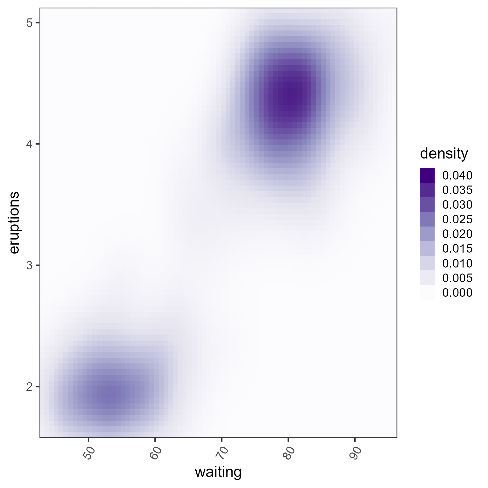

Continuous linear color scale for ggplot2, with max and optional floor
Source:R/colorjam-scale-color-div-xf.R
scale_color_linear_xf.RdContinuous linear color scale for ggplot2, with max and optional floor
Usage
scale_color_linear_xf(
x = 1,
floor = 0,
baseline = 0,
lens = 0,
n = 6,
colramp = "Purples",
open_floor = FALSE,
floor_color = NULL,
guide = NULL,
breaks = NULL,
hjust = 1,
aesthetics = "color",
...
)
scale_fill_linear_xf(
x = 1,
floor = 0,
baseline = 0,
lens = 0,
n = 6,
colramp = "Purples",
open_floor = FALSE,
floor_color = NULL,
guide = NULL,
breaks = NULL,
hjust = 1,
aesthetics = "fill",
...
)Arguments
- x
numericvalue used as a threshold, where numeric values at or above this valuexare assigned the last color in the color gradient. Negative values at or below this negative value-xare assigned the first color in the color gradient.- floor
numericoptional value where numeric values between-xandxare assigned the middle color in the color gradient. Note that values at exactlyxor-xare assigned the next respective color away from the middle color. Whenfloor=0orfloor=NULLno floor is applied, and colors are assigned using a continuous range of numeric values from-xtoxwith lengthn.- baseline
numericvalue to define the baseline value, used when zero is not the initial value. Note thatbaselinecan be either higher or lower thanx, and colors fromcolrampwill be applied starting atbaselinethroughx.- lens
numericvalue indicating a color lens applied to the color gradient, passed tojamba::getColorRamp(). Lens valueslens > 0will condense the color gradient, making smaller changes more visually distinct;lens < 0expands the color gradient, making smaller changes less visually distinct.- n
integernumber of colors used for the initial color gradient. This value is forced to be an odd number, so the "middle color" will always be represented as one strict color. Note that when using afloor, the first non-middle color is used for thefloorassignment which means a smallernvalue will assign a more visibly distinct color than using a largern. See examples.- colramp
characterpassed tojamba::getColorRamp()which recognizes one of several forms of input:characterstring matching the name of a color ramp fromRColorBrewer(see divergent palettes withRColorBrewer::display.brewer.all(type="div")). Note that adding"_r"will reverse the color gradient, so the default"BuRd_r"will create a color gradient with "blue-white-red" - with red for high values consistent with "heat" in "heatmaps" - where heat is red.charactervector of R colors, which define a specific color ramp. This vector will be expanded tonlength.
- open_floor
logicalindicating whether colors below the assignedfloorwill still receive non-middle color. Settingopen_floor=TRUEis the best method to compare the effect of assigning the strict middle-color to values below thefloor, versus using gradient colors below thefloor, while all remaining numeric-color assignments are held constant.- floor_color
characterdefault NULL, optional fixed color to apply below the floor threshold. Note that this color works best whenopen_floor=FALSE.- guide
GuideLegendobject used by ggplot2 to customize the guide displayed in the legend. Default simply sets the guide legend values to be reversed, so that higher numeric values appear at the top of the legend.- breaks
default NULL uses the breaks and labels defined by
col_div_xf(), otherwise suggestedggplot2::waiver()to use its default.- hjust
numericused to define horizontal justification of numeric labels. Default 1 uses right-alignment.- ...
additional arguments are passed to
ggplot2::continuous_scale().
Value
ggplot2::ScaleContinuous object which inherits ggproto,
suitable to use in ggplot2 composition.
Details
This function is intended to provide ggplot2 color scales
using the same logic applied in col_linear_xf().
Specifically, it applies a maximum numeric value to the color range,
and an optional numeric floor.
Other enhancements:
The ggplot2 legend shows discrete steps with labels for each color. This style differs from ggplot2 "colorsteps" which labels the break between colors.
See also
Other colorjam ggplot2:
scale_color_div_xf(),
scale_color_jam(),
scale_fill_jam(),
theme_jam()
Examples
# ggplot2 is required
ggplot2::ggplot(ggplot2::faithfuld, ggplot2::aes(waiting, eruptions, fill=density)) +
ggplot2::geom_raster() +
scale_fill_linear_xf(0.04) +
ggplot2::scale_x_continuous(expand = c(0, 0)) +
ggplot2::scale_y_continuous(expand = c(0, 0)) +
theme_jam()
